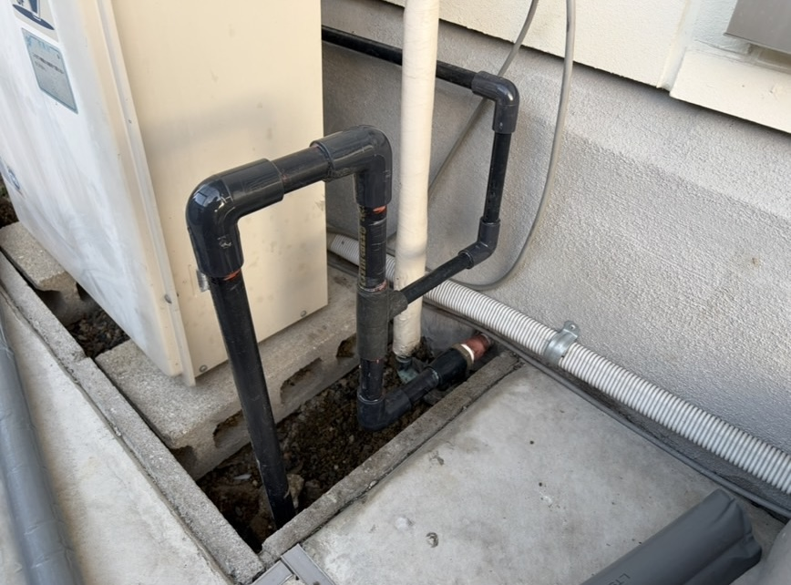
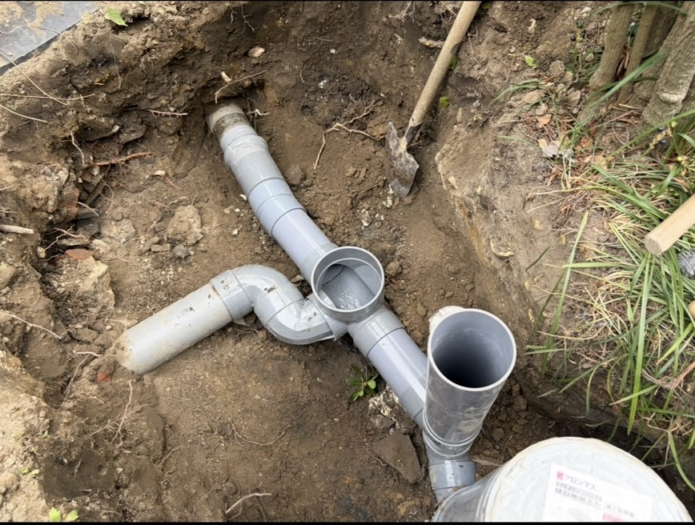
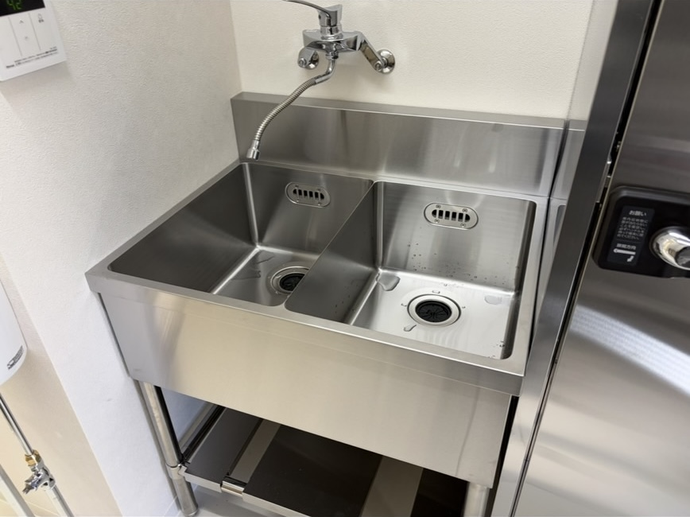

KIRYU SETSUBI KISHIWADA
岸和田市の
水漏れ修理・排水詰まりなら
希竜設備！
岸和田市で水漏れ修理・排水詰まり・配管工事なら希竜設備。
岸和田市を拠点に、地域密着で迅速に対応します。
岸和田市で水漏れ修理・排水詰まり・配管工事なら希竜設備。
岸和田市を拠点に、地域密着で迅速に対応します。
希竜設備は、岸和田市の水漏れ修理・排水詰まり・配管工事・水回りリフォームなど、 暮らしに欠かせない設備工事を丁寧に対応する水道設備会社です。
蛇口・トイレ・洗面・キッチンなどの水漏れ修理に迅速対応します。
排水の流れが悪い、詰まったなどのトラブルにも丁寧に対応します。
給水管・排水管の新設、交換、改修まで対応します。
洗面台・トイレ・給湯器・エコキュートなどの交換もお任せください。


